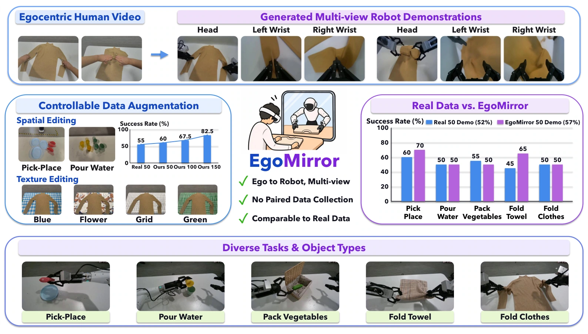
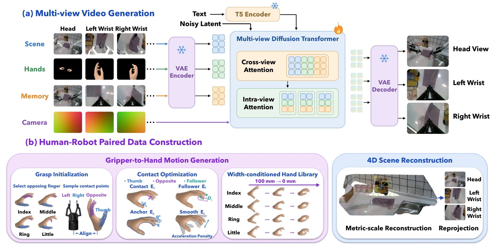
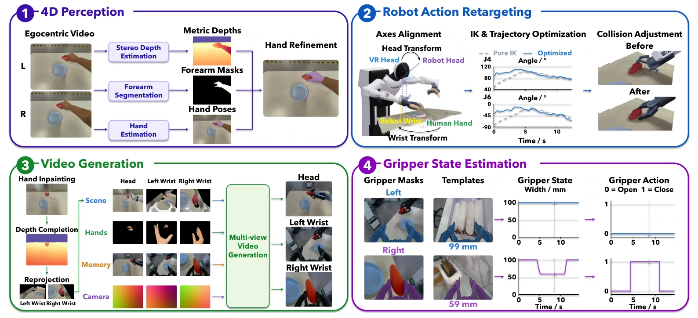

EgoMirror: Generating Multi-View Robot Demonstrations from Egocentric Data
1CFCS, School of Computer Science, Peking University2QYRO
Abstract
General-purpose robot learning requires diverse demonstration data, yet collecting such data on physical robots is costly. Egocentric human videos offer a scalable alternative, but converting them into robot demonstrations remains challenging due to the observation gap between human egocentric views and multi-view robotic observations. To bridge this gap, we propose EgoMirror, a framework that converts egocentric human demonstrations into multi-view robot demonstrations. Our multi-view video generation model jointly generates head and wrist videos conditioned on shared 4D scene geometry, robot renderings, and human hand poses. To train this model without collecting human-robot paired data, we construct paired supervision through reverse synthesis, retargeting robot gripper motions into diverse human hand poses and reconstructing 4D scenes. We further develop an end-to-end system that converts VR-collected human videos into multi-view robot demonstrations with robot actions. Experiments on five real-world manipulation tasks show that policies trained on 50 converted human demonstrations per task achieve a 57% average success rate, comparable to 52% with the same number of real-robot demonstrations. Further experiments on spatial and texture editing highlight the potential of EgoMirror for generating diverse robot demonstrations.
Overview

Method




Generated Demonstrations
Real-World Policy Execution
Policy Success Rates
| Training regime | Pick & Place | Pour Water | Pack Vegetables | Fold Towel | Fold Clothes | Average |
|---|---|---|---|---|---|---|
| Phantom | 0% | 10% | 0% | 5% | 0% | 3% |
| Ego2Robot | 25% | 25% | 15% | 10% | 0% | 15% |
| Real (single-view) | 20% | 20% | 40% | 20% | 30% | 26% |
| EgoMirror (single-view) | 55% | 35% | 15% | 20% | 45% | 34% |
| Real (multi-view) | 60% | 50% | 55% | 45% | 50% | 52% |
| EgoMirror (multi-view) | 70% | 50% | 50% | 65% | 50% | 57% |
Baseline Comparison
BibTeX
@article{fan2026egomirror,
title = {{EgoMirror}: Generating Multi-View Robot Demonstrations from Egocentric Data},
author = {Hongwei Fan and Xinyu Wang and Chenbo Xin and Yuxuan Yao and Chengwei Zhang and Yuxing Long and Jiafeng Xu and Xiaoqi Li and Hao Dong},
year = {2026},
eprint = {xxxx.xxxxx},
archivePrefix = {arXiv},
primaryClass = {cs.RO},
url = {https://arxiv.org/abs/xxxx.xxxxx}
}Join Us
We are hiring innovative undergraduate/graduate students, working on robotics and world model.
To get in touch, email hwfan25[at]stu.pku.edu.cn or hao.dong[at]pku.edu.cn.